Select the segments of the hexagon to find out more about the profiles
Yellows are inventive
Yellows are expressive
Yellows speak before processing
Oranges are action-focused
Oranges are optimistic and positive
Oranges are easily excitable
Reds are entertainers
Reds are jokers
Reds are motivators.
Purples are inclusive
Purples are caring
Purples think deeply
Greens are technical
Greens are structured
Greens are composed.
Blues are precise and specific
Blues are literal
Blues use facts and logic to convince you
Yellow language
Here are 10 traits of a yellow
Think Creatively
Unconventional
Inventive
Flexible
Open-minded
Imaginative
Original
Out of the box
Experimental
Visionary
Yellows are inventive
They will often have many thoughts running through their head at once and so jump from one topic to the next.
Yellows are expressive
They may use words that are unusual or complex and be very descriptive of things.
Yellows speak before processing
They might sometimes talk without a filter, saying anything that comes into their head, seeming to process it only once they have spoken, not before.

Orange language
Here are 10 traits of an orange
Resourceful
Business Savvy
Optimistic
Energising
Experimental
Self assured
Opportunistic
Bold
Innovative
Adaptable
Oranges are action-focused
They will use doing or action words more than other colours. They want to get to the point and are very good at focusing in on what they want.
Oranges are optimistic and positive
So, although they focus in on what they want, they will usually frame this in a positive way. Their language is typically upbeat.
Oranges are easily excitable
If an idea grabs them, they can get caught up in it and speak very enthusiastically.

Red language
Here are 10 traits of a red
Sociable
Entertaining
Expressive
People person
Team focused
Demonstrative
Spontaneous
Fun
Magnetic
Charismatic
Reds are entertainers
They are bubbly, humourous and want to entertain anyone they interact with.
Reds are jokers
They sometimes give the sense of not taking anything seriously as they take any excuse to make a joke or distract.
Reds are motivators
They can bring groups of people together and inspire people through their natural flair and engaging personality.
Purple language
Here are 10 traits of a purple
Humanitarian
Understanding
Wise
Inclusive
Compassionate
Empathetic
Optimistic
Environmentally friendly
Deep-thinking
Spiritual
Purples are inclusive
They like to ensure that they are using language that engages and includes whoever they are interacting with.
Purples are caring
It is important for them to ask questions of other people to gauge their mood or take on things.
Purples think deeply
They will like to express or discuss feelings or how things matter in the grand scheme of things.
Green language
Here are 10 traits of a green
Trustworthy
Practical
Process-Driven
Diligent
Dedicated
Organsied
Structured
Methodical
Composed
Meticulous
Greens are technical
The language of a dominant green person will be very technical and practical. They like to understand what they are talking about to a high degree of detail. So, when they talk to you, they want to convey that they know what they are talking about. With this in mind, they are often very conscious of using the appropriate language to demonstrate knowledge or understanding. They might not be as likely to use slang or speak colloquially.
Greens are structured
They might use bullet points, numbering or headings.
Greens are composed
They will very rarely get lost or flustered because they know what they are trying to say. They won’t waste energy with ‘filler’ words either.
Blue language
Here are 10 traits of a blue
Confident
Motivated
Focused
Independent
Accurate
Logical
Factual
Decisive
Rational
Analytical
Blues are precise and specific
This means if there are a number of items, they will say the exact number, not ‘some’ or ‘a couple’ or ‘a few'.
Blues are literal
They are going to tell you exactly what they want you to know, or if you asked for something they will take it literally and answer exactly what you asked for.
Blues use facts and logic to convince you
They present things in a factual and un-emotive fashion, they believe in giving the facts and letting that convince you. They won’t try to bring emotion into proving a point, they will deliver the information that they think is comprehensive enough.